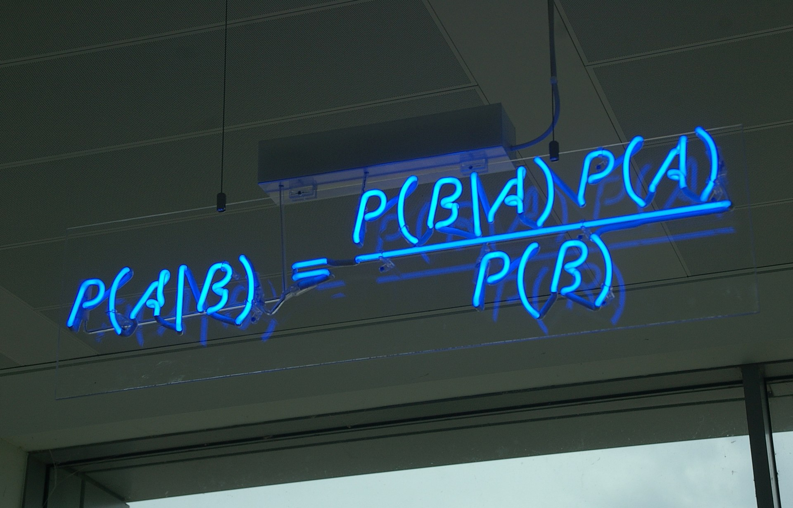
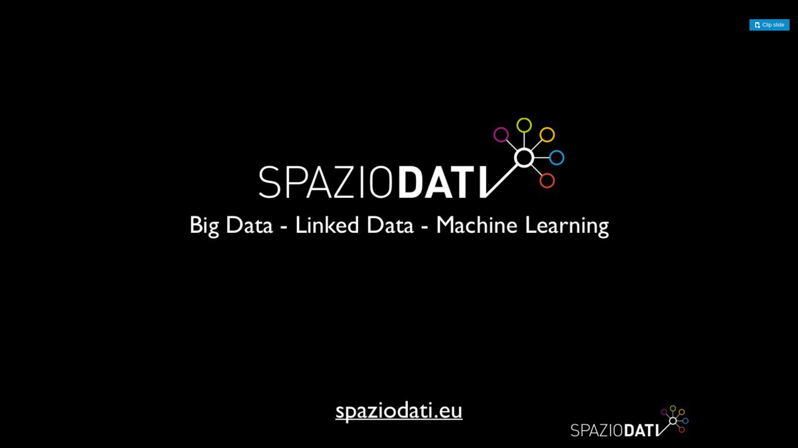

Antonio Ercole De Luca
About Me
Since 2016, I've consulted in various roles including Machine Learning Engineer, Data Architect, Data Scientist, DevOps, and Scrum Master. My expertise spans the full data lifecycle: from web scraping and relational database design to cloud deployment, RESTful APIs, and Jupyter Notebooks. In 2019, I took a sabbatical to deepen my knowledge in Statistics and Finance, contributing to two scientific papers on Web Scraping and Data Visualization.
- Education:
- BSc in Computer Science, University of Pisa
- MSc in Business Informatics, University of Pisa
- BSc in Statistics for Data Science, University of Palermo
SunnyPlans
SunnyPlans merges my passion for sustainability with solar industry innovation. This startup helps businesses identify optimal terrains for utility-scale solar projects, streamlining the shift to renewable energy.
My involvement is personal—it's a commitment to making solar energy mainstream.

Las Palmas PyData Meetup
In 2022, I relocated to Las Palmas and co-founded PyData Las Palmas in November, fostering innovation among digital nomads and expats.

Open Source Contributions
During the 2020 lockdown, I contributed to Dask, implementing random sampling on Distributed Sets (Bags) to tackle Big Data challenges.
Read more in my Medium post.

Statistics for Data Analysis
After years of international consulting and advanced degrees, I pursued a BSc in Statistics at the University of Palermo to strengthen my mathematical foundation.
KiwiBot
I collaborated with KiwiBot for three months at Berkeley SkyDeck, reconnecting with a contact from a nomadic camp in Lanzarote.
Digital Nomad Journey
Starting with an open-source LinkedIn scraper, I transitioned to remote work via Upwork, traveling through Europe, Peru, and the US.

SpazioDati
In a year-long internship, I developed an Active Learning technique for Entity Linking in Dandelion, using logistic regression and CrowdFlower datasets.
University of Pisa
I earned a BSc in Computer Science and MSc in Data Science & Business Informatics, researching IR, NLP, and ML. I also studied abroad in Valencia via Erasmus.